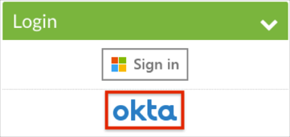

Contact the Sharpen Support team and request that they enable SAML 2.0 for your organization.
Include the following with your request:
Specify the type of Sharpen instance, one of:
Sharpen (app)
Sharpen QA (appqa)
Sharpen Connect (connect)
Sharpen Connect QA (connectqa)
Metadata URL: Copy and paste the following:
Sign into the Okta Admin dashboard to generate this value.
In Okta, select the Sign On tab for the Sharpen app, then click Edit.
For Default Relay State, enter one of the following values, based on your Sharpen instance type:
Sharpen: https://app.sharpencx.com/okta-saml/okta.php
Sharpen QA: https://appqa.sharpencx.com/okta-saml/okta.php
Sharpen Connect: https://connect.sharpencx.com/okta-saml/okta.php
Sharpen Connect QA: https://connectqa.sharpencx.com/okta-saml/okta.php
Click Save.

The Sharpen Support team will process your request. After receiving a confirmation email, you can start assigning people to the application.
Done!
Notes:
SP-initiated flows and IdP-initiated flows are supported.
Just In Time (JIT) provisioning is not supported.
Open the Login URL.
Select Login.
Select okta:
